mixmusic
Spotify and YouTube Music in one free, open‑source desktop player.
One search across both services, one queue that mixes them, one library that keeps them, in a player whose whole look you can change. Source on GitHub.
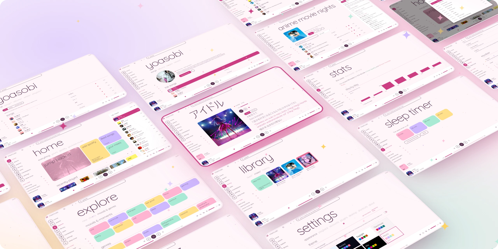
walkthrough
A minute in the player, page by page, from home to the sleep timer.
search
allsongsalbumsartistsplaylists
One search box looks through Spotify and YouTube Music at once.
Suggestions come as you type, and songs, albums, artists and playlists of both services land in the same lists. Every result carries a mark of where it comes from, so you always know which service plays it.
- a disc for Spotify
- a square for YouTube Music
- two rings for your own mixes
YouTube Music needs no account. Spotify joins the same search once you sign in with an app of your own from Spotify's developer dashboard; the guide takes two minutes.
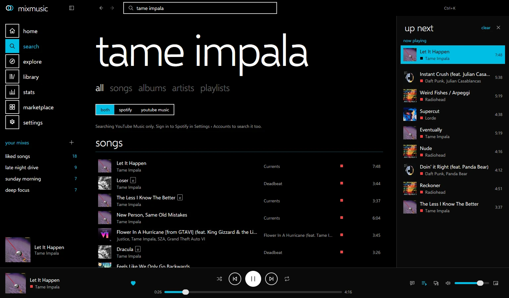
queue
up nextshufflerepeatradio
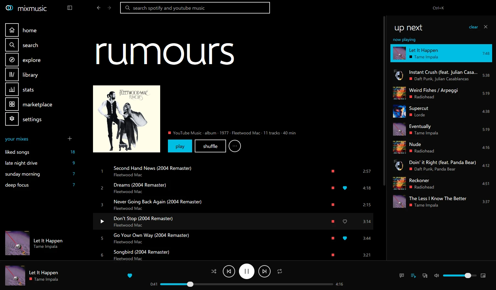
Tracks of both services, in one queue that keeps going.
- Queue from anywherePlay next or add to the queue from any track, album or playlist, then drag to reorder.
- Shuffle, repeat, crossfadeAnd a radio of what you played that carries on when the queue runs out.
- Spotify, with or without PremiumSpotify tracks play on a Spotify Connect device, or from their recording on YouTube Music in MixMusic's own player; on Windows, in MixMusic itself too.
library
likedmixeshistorystats
Liked songs and mixes that hold tracks of any service, with your history and stats beside them.
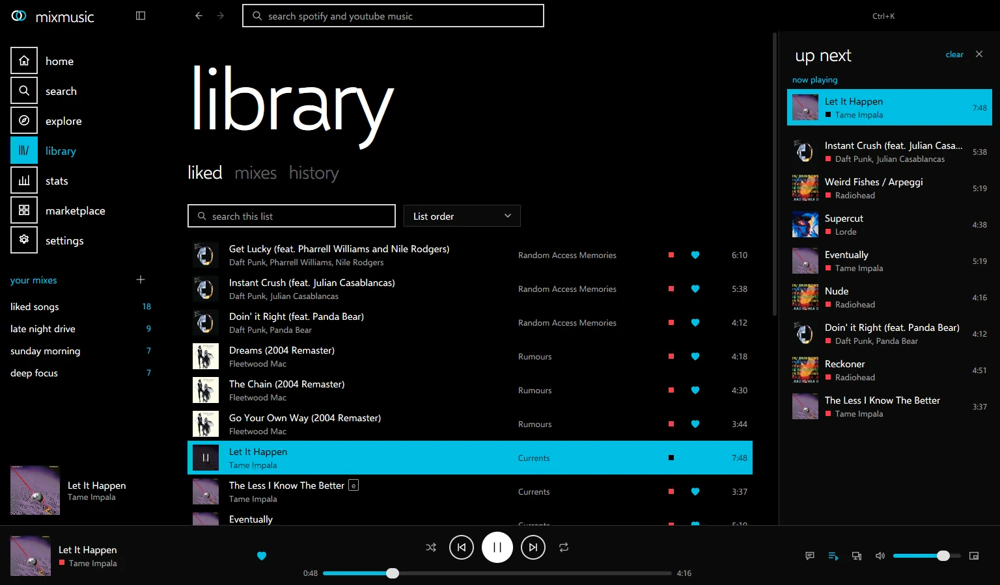
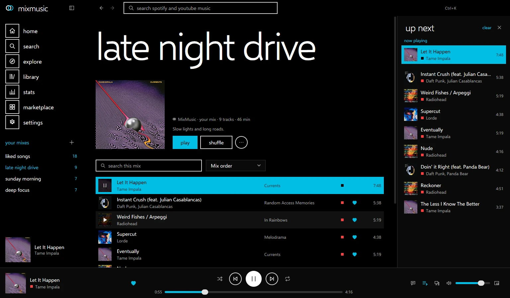
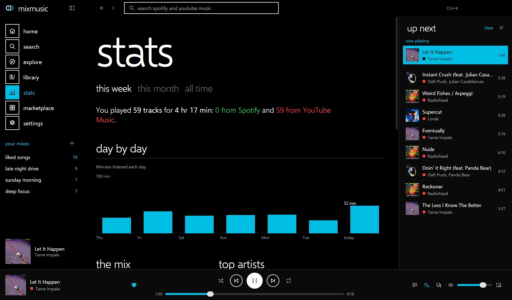
Import a Spotify or YouTube Music playlist into a mix and keep adding to it from either service. Search inside a playlist, a mix or your liked songs, and sort them by title, artist or length. The screenshots show a demo library.
explore
newchartsmoods & genresrelated
Somewhere to find what you have not heard yet.
- New albums and singlesWhat came out lately, and the songs trending now.
- The chartsThe top videos and artists of your country.
- Moods and genresChill, focus, workout and dozens more, each a tile that opens its playlists.
- RelatedUnder now playing: songs, playlists and artists like what you hear.
Explore comes from YouTube Music, so it needs no account.
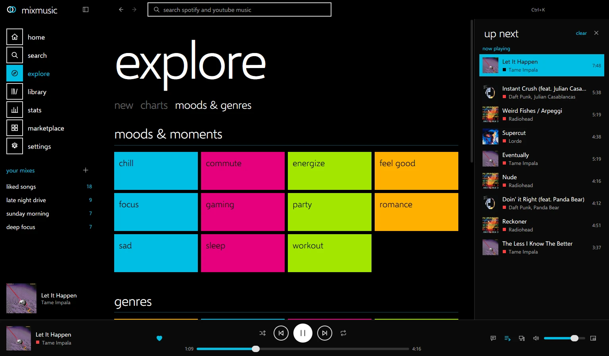
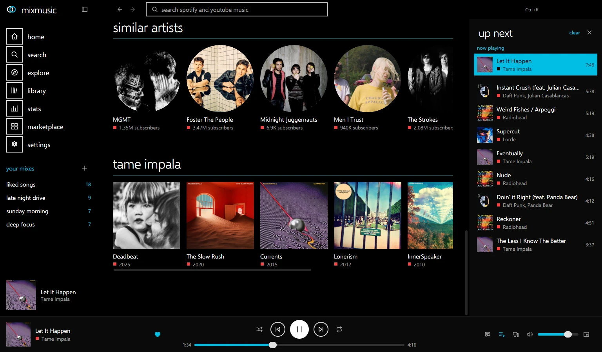
accounts
youtube musicspotifylast.fmdiscord
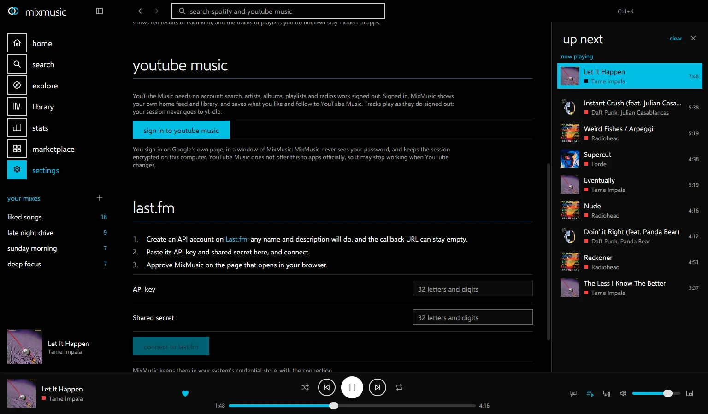
Sign in, and your own music comes along.
- YouTube MusicYour home feed, and your liked songs, playlists, albums and artists. You sign in on Google's own page, so MixMusic never sees your password.
- SpotifyYour library there, once you sign in with an app of your own from Spotify's developer dashboard.
- Last.fmEvery track you hear joins your profile, and plays made offline go out once you are back. It takes an API account of your own from Last.fm.
- DiscordYour profile shows what plays, with its artwork and the time left, under an application you make in Discord's developer portal.
Like a song, save an album or a playlist, or follow an artist, and it reaches YouTube Music or Spotify too.
lyrics
syncedequalizerlevellingcrossfade
Lyrics that follow the song, and a sound you tune.
Synced lyrics from LRCLIB and YouTube Music light up line by line on the now playing page, or beside whatever page you are on. To read them whole, show them as plain text.
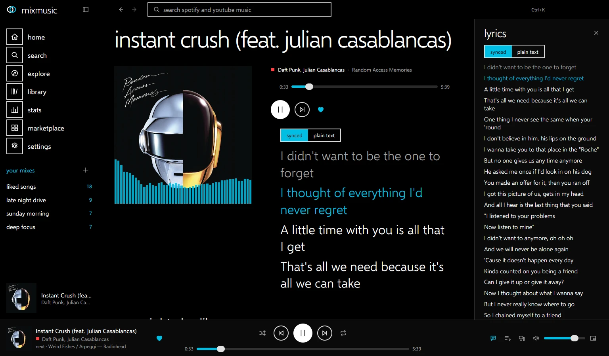
- 10-band equalizerwith presets and a preamp
- volume levellingquiet and loud tracks meet in the middle
- crossfadebetween tracks, as long as you like
- offline cachewhat you played, kept for next time
keyboard
paletteshortcutstraymini player
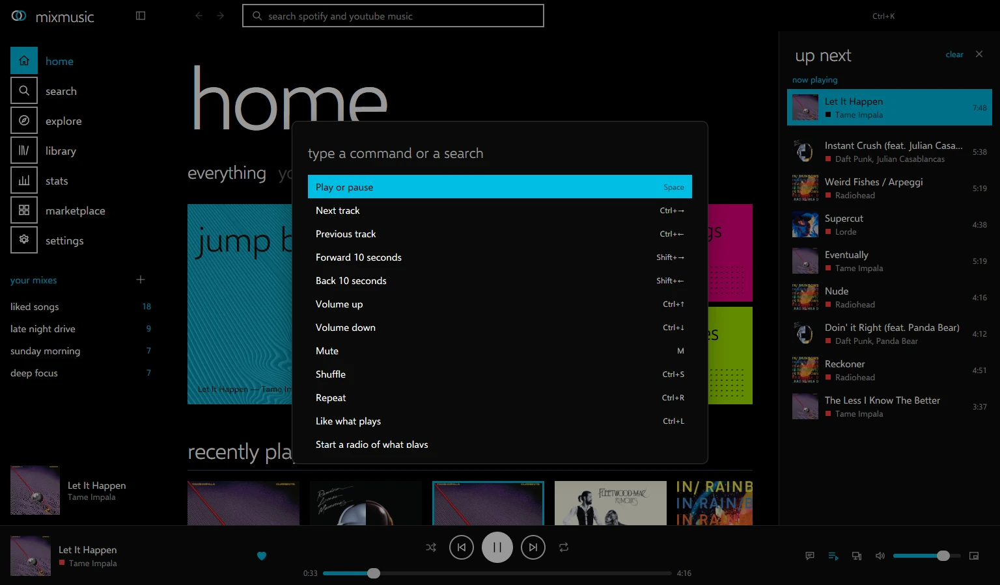
Fast for hands on the keyboard, quiet in the background.
- CtrlK
- command palette
- Space
- play or pause
- Ctrl→
- next track
- CtrlF
- search
- CtrlJ
- show the queue
- CtrlM
- mini player
Every key is yours to change in Settings › Shortcuts, plugins' commands too.
The tray, media keys, desktop notifications, a mini player, start at login and mixmusic:// links do the everyday work while the window stays closed. MixMusic looks for a new version at start and every few hours, checks its signature, and installs it when you agree, or by itself if you choose.
themes
built incommunitymake one
The whole look is a theme. Ten ship with the app, and the community makes more.
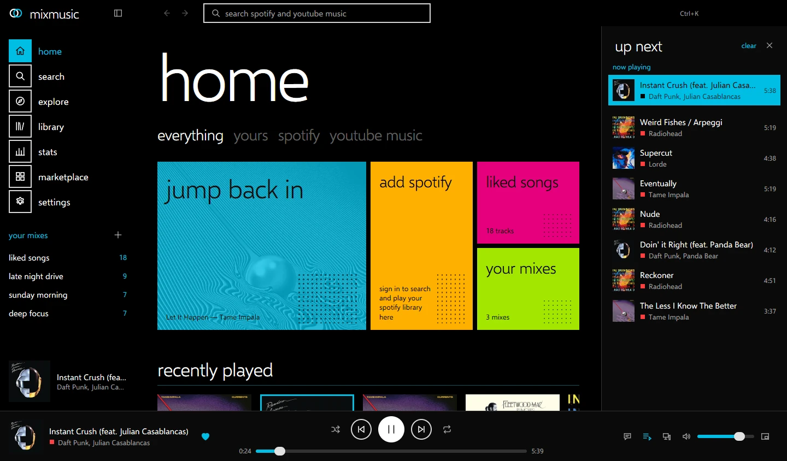
Follow the computer: choose a theme for its light mode and one for its dark mode, and MixMusic switches with it.
make one
A theme is a folder with a theme.json: eighteen colors, the fonts and a corner radius, which MixMusic draws everything with, so a theme keeps working as the app changes.
"id": "aurora",
"name": "Aurora",
"scheme": "dark",
"colors": {
"bg": "#070a16",
"text": "#eef2ff",
"accent": "#4ee6c0",
"tile-1": "#4ee6c0",
"tile-2": "#7b5cff",
…
},
"radius": "18px"plugins
registrythe apishare yours
Plugins add pages, commands, track actions and widgets through a typed API.
A plugin is an ES module and a manifest. It gets the player, the queue, the catalog, your library, commands, settings and storage, and adds pages, widgets and track actions that MixMusic draws in your theme, with types in the SDK. Every plugin can use the whole API, so MixMusic asks before it enables one.
// api is the SDK's MixMusicAPI:
// import("mixmusic-sdk").MixMusicAPI
export default function activate(api) {
api.commands.register({
id: "shout",
title: "Shout what plays",
shortcut: "Mod+Shift+S",
run: () => {
const { track } =
api.player.state();
api.ui.toast(track
? `Now: ${track.title}`
: "Nothing plays");
},
});
}in the registry
-
Sleep TimerFades the music out and pauses it after a while, or at the end of the track.playbackstorage
-
SpectrumA radial spectrum of what plays, drawn in the accent colour on the now playing page.playback
-
Neon NightsElectric magenta and violet tiles on deep indigo.theme
-
Paper MintA quiet light theme: graphite ink, mint and coral tiles, rounded corners.theme
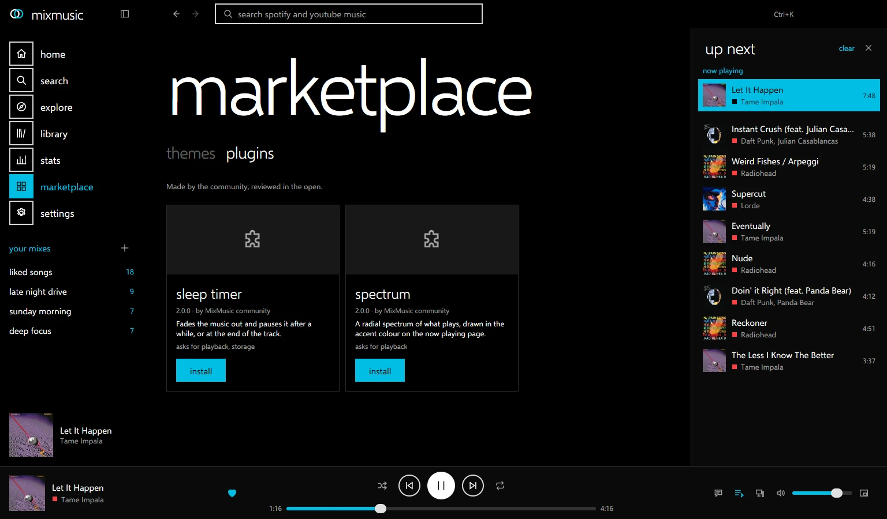
share yours
- Make it, and try it from your add-ons folder.
- Add its folder to
community/in a fork, and run the registry tool. - Open a pull request with a screenshot. Once it is merged, everyone sees it in the marketplace.
open source
contributingissueschangelog
MIT licensed, and built in the open.
MixMusic is one small Go program built on MyGo, which draws its windows itself, on the GPU: there is no browser inside to download or keep in memory, and the Windows installer is about 8 MB.
Fixes, features, themes, plugins and reports of what does not work are all welcome.
download
Free for macOS, Windows and Linux. Version 0.5.3, release notes.
- macos for your system macOS 12 and later, Apple silicon and Intel .dmg15.5 MB
- windows for your system Windows 10 and 11 x64 installer8.1 MB Arm installer6.9 MB x64 portable zip10.5 MB Arm portable zip9.4 MB
- debian, fedora for your system a .deb for Debian and Ubuntu, an .rpm for Fedora and openSUSE x64 .deb10.6 MB Arm64 .deb9.6 MB x64 .rpm9.5 MB Arm64 .rpm8.1 MB
- any linux an AppImage, or an archive and an install script into ~/.local x64 AppImage10.3 MB Arm64 AppImage9.4 MB x64 .tar.gz10.6 MB Arm64 .tar.gz9.6 MB install.sh9 KB
what it needs
- YouTube Musicyt-dlp, which MixMusic installs for you from Settings › Playback, and a JavaScript runtime on your PATH: Deno, Node.js, Bun or QuickJS.
- SpotifyAn app of your own from the Spotify developer dashboard, made with a Spotify account that has Premium, whose Client ID you paste in Settings › Accounts. The guide walks through it.
- First launchThe macOS app is not notarized yet: open it once from System Settings › Privacy & Security › Open Anyway. The Windows installer is not signed yet: if SmartScreen warns, choose More info › Run anyway.
- LinuxGTK 3, and PulseAudio, which PipeWire serves too, or ALSA; signing in to YouTube Music takes WebKitGTK 4.1. On Debian and Ubuntu:
sudo apt install libgtk-3-0 libpulse0 libwebkit2gtk-4.1-0
Verify every download against SHA256SUMS in the release. All versions are on the releases page.